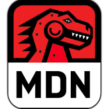
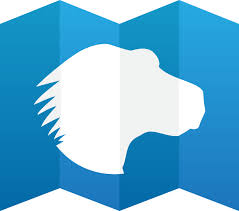

Contributing to
What is ..
MDN Web Docs (tambien conocido como MDN - Mozilla Developer Network)
es un proyecto de documentacion de estándares web (CSS, HTML y JavaScript),
las tecnologías de Mozilla y otros temas de desarrollo.


What can do?
How?
- Paso 1: Crea una cuenta en MDN
- Paso 2: Elige en qué quieres contribuir
- Paso 3: Lleva a cabo la tarea
Resources:
Gracias!